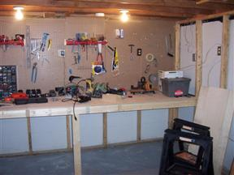
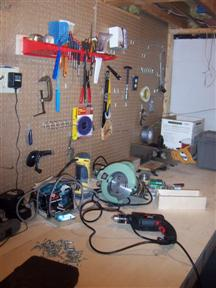

The Workbench
Started 2/2/2008
In order to do some projects you need a workbench. The original owner
of the house had quite a bit of woodworking equipment down in the
basement but I never really used the space for much more than storage
until now.

I wanted it big so I made it span the entire side of the basement. It's
about 3 x 12 feet big.

It took all weekend but I was pretty proud of the results. I probably
could have made it just a bit thinner as it is a bit hard to reach the
top pegs even if I am pretty tall but it is a big work bench. Now to
get started on some projects.
back